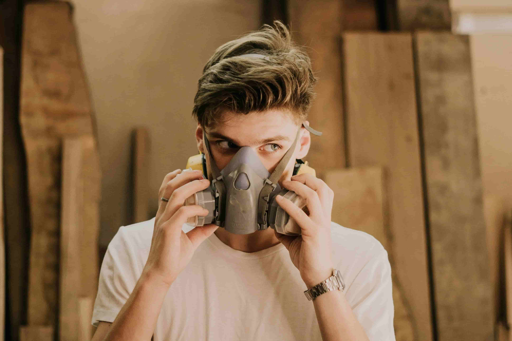
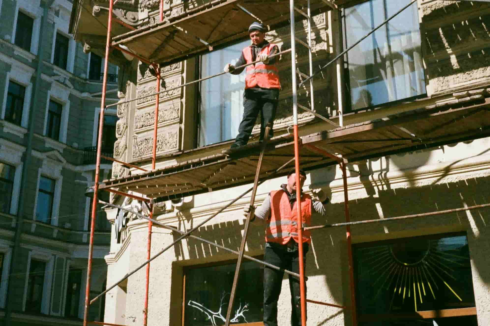
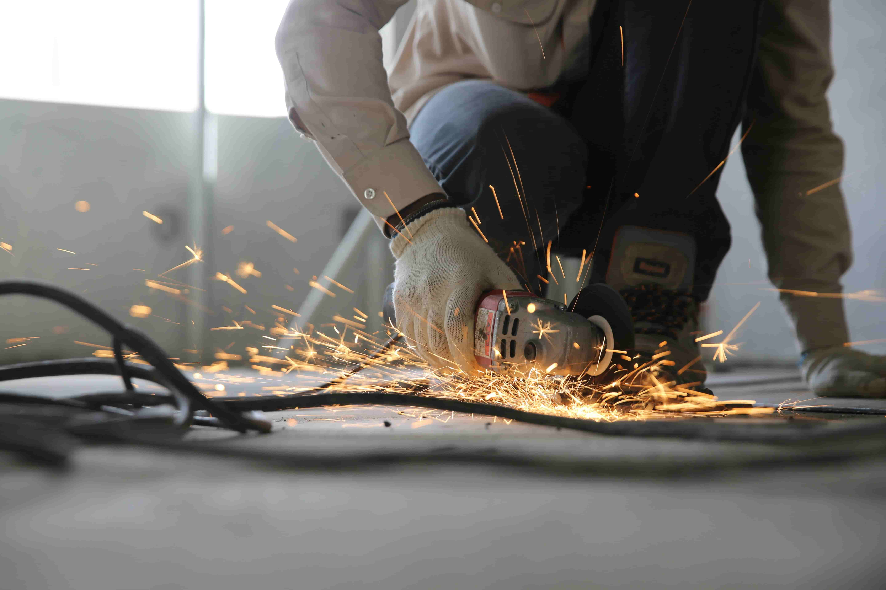

Kalo denger kata safety, mungkin yang kebayang di pikiran kita helm proyek, rompi oranye, atau rambu-rambu di pabrik. Padahal, safety di dunia kerja itu jauh lebih luas dan penting dari itu,
guys! Ini bukan cuma urusan orang tua atau aturan kaku yang bikin ribet, tapi ini tentang gimana kita bisa kerja dengan aman, sehat, dan pastinya, tetap produktif.
Secara sederhana, arti kata safety jika diterjemahkan ke dalam bahasa Indonesia adalah selamat atau keselamatan. Sementara untuk konteks pekerjaan, safety berarti usaha dalam melaksanakan
setiap aktivitas pekerjaan dengan cara yang aman sehingga tidak sampai mengakibatkan kecelakaan. Keselamatan tempat kerja mengacu pada pembatasan elemen yang dapat menyebabkan bahaya,
kecelakaan, dan hasil negatif lainnya di tempat kerja. Dalam sebuah pekerjaan, pekerja harus bekerja sesuai dengan aturan SOP (Standar Operasional Prosedur), agar terhindar dari sesuatu yang
tidak diinginkan.
Berikut beberapa jenis bahaya di tempat kerja yang mengancam keselamatan.

Paparan Bahan Kimia Berbahaya

Bahaya Ketinggian tanpa APD

Bahaya Hot Work
Healthy
Kesehatan adalah aset tak ternilai yang memengaruhi setiap aspek kehidupan Anda, mulai dari produktivitas kerja, hubungan sosial, hingga kebahagiaan pribadi. Your Health adalah tentang
bagaimana Anda mengambil tanggung jawab penuh atas kesejahteraan fisik, mental, dan emosional Anda. Ini bukan hanya tentang menghindari penyakit, tetapi juga tentang menciptakan gaya hidup
yang seimbang, berenergi, dan penuh makna.
Mengapa Your Health Penting?
Kesehatan yang baik adalah fondasi untuk hidup yang berkualitas. Tanpa kesehatan, semua pencapaian dan kesuksesan menjadi kurang berarti. Dengan menjaga kesehatan, Anda dapat:
- Meningkatkan energi dan produktivitas sehari-hari.
- Mencegah penyakit kronis seperti diabetes, jantung, dan hipertensi.
- Meningkatkan kualitas hidup dan kebahagiaan.
- Menjadi contoh positif bagi keluarga dan orang-orang di sekitar Anda.
Responsibility
Your Responsibility adalah tentang kesadaran bahwa Anda adalah aktor utama dalam kehidupan Anda sendiri. Ini berarti Anda bertanggung jawab atas keputusan, tindakan, dan hasil yang Anda capai.
Baik dalam hal kesehatan, keselamatan, karier, atau hubungan, tanggung jawab pribadi adalah kunci untuk menciptakan kehidupan yang lebih baik, baik untuk diri sendiri maupun orang-orang di
sekitar Anda.
Apa Arti Your Responsibility?
Tanggung jawab pribadi adalah tentang:
- Mengakui bahwa Anda memiliki kendali atas pilihan dan tindakan Anda.
- Tidak menyalahkan orang lain atau keadaan atas masalah yang Anda hadapi.
- Mengambil inisiatif untuk memperbaiki situasi dan mencapai tujuan Anda.
- Menjadi proaktif dalam merencanakan dan mengelola kehidupan Anda.
Berikut adalah beberapa cara agar anda bisa menjaga safety dan kesehatan
Every Choice Counts
Your Actions Shape
Your Safety And Healthy
"Setiap pilihan itu penting. Tindakanmu membentuk keselamatan dan kesehatanmu."
Hey, guys! Kita semua pasti setuju kalau hidup itu penuh tantangan, tapi jangan sampai tantangan itu bikin kita lupa sama keselamatan diri sendiri. Nah, di sinilah peran APD (Alat
Pelindung Diri) jadi super penting! APD itu kayak superhero gear yang bikin kita tetap aman dari berbagai risiko, baik di tempat kerja, proyek, atau bahkan aktivitas sehari-hari yang
mungkin berbahaya.
Bayangin aja, helm itu kayak pelindung kepala kita dari benturan, masker buat filter udara kotor atau bahan kimia, sarung tangan buat jaga tangan dari benda tajam atau panas, dan sepatu
safety buat ngelindungin kaki dari barang berat atau permukaan yang berbahaya. Intinya, APD itu bukan sekadar aksesori, tapi kebutuhan wajib buat siapa aja yang peduli sama keselamatan.
Tapi, sayangnya, masih banyak yang suka nyepelein pentingnya APD. Ada yang bilang, “Ah, ribet!” atau “Nggak keren, deh!” Padahal, safety itu nggak ada hubungannya sama gaya, guys. Justru,
orang yang peduli sama keselamatan itu keren banget! Mereka nggak cuma ngelindungin diri sendiri, tapi juga bikin lingkungan sekitar lebih aman buat orang lain.
Nah, buat kalian yang masih suka nge-skip pakai APD, coba deh pikir lagi. Risiko itu nggak pernah kasih tau kapan dia dateng. Jadi, mending kita siapin diri dengan selalu pakai APD yang
sesuai sama kebutuhan. Ingat, keselamatan itu investasi buat masa depan kita. Jangan sampe karena kelalaian kecil, kita malah ngerugiin diri sendiri atau bahkan orang lain.
Yuk, mulai sekarang kita bangun kebiasaan baik: Pilih lah untuk Selalu Pakai APD! Jadikan itu bagian dari lifestyle kalian. Karena dengan pakai APD, kita bukan cuma jadi pribadi yang lebih
bertanggung jawab, tapi juga ikut nyebarin semangat safety ke orang-orang di sekitar kita
Sebelum mulai aktivitas, apalagi yang berhubungan dengan alat atau mesin, jangan lupa buat cek dulu peralatannya , guys! Ini bukan cuma formalitas, tapi langkah penting
buat memastikan semuanya aman dan siap dipakai.
Bayangin aja, kalau kita nggak ngecek alat sebelum dipakai, bisa-bisa ada kerusakan atau masalah teknis yang bikin kita dalam bahaya. Misalnya, kabel yang udah aus, mesin yang nggak
berfungsi dengan baik, atau alat yang udah nggak layak pakai. Hal-hal kayak gini bisa bikin kecelakaan yang sebenarnya bisa dicegah.
Dengan memeriksa peralatan sebelum digunakan, kita nggak cuma ngelindungin diri sendiri, tapi juga orang-orang di sekitar kita. Plus, alat yang terawat pasti lebih awet dan performanya
lebih oke, jadi kita juga bisa kerja lebih efisien.
Jadi, yuk, biasakan diri buat selalu cek kondisi peralatan sebelum mulai aktivitas. Pastikan semuanya berfungsi dengan baik, nggak ada kerusakan, dan sesuai sama standar keselamatan.
Ingat, keselamatan itu tanggung jawab kita semua, dan langkah kecil kayak gini bisa bikin perbedaan besar!
Hidup sehat itu pilihan, guys! Dan salah satu cara terbaik buat menjaga kesehatan adalah dengan Menghindari kebiasaan buruk seperti merokok dan minum alkohol berlebihan.
Kedua kebiasaan ini emang sering dianggap "biasa" atau "kekinian," tapi dampaknya ke tubuh kita nggak main-main, lho!
Merokok, misalnya, nggak cuma bikin napas jadi bau atau gigi kuning, tapi juga bisa nyerang paru-paru, jantung, dan bahkan meningkatkan risiko kanker. Padahal, tubuh kita itu aset berharga
yang harus dijaga, bukan dirusak perlahan-lahan.
Sama halnya dengan alkohol. Minum sesekali mungkin nggak masalah, tapi kalau berlebihan, efeknya bisa bahaya banget. Mulai dari gangguan hati, masalah pencernaan, sampai dampak ke mental
dan emosi. Belum lagi risiko kecanduan yang bikin kita susah lepas dari kebiasaan ini.
Nah, buat kalian yang mungkin masih terjebak dalam kebiasaan ini, coba deh mulai berpikir ulang. Hidup sehat itu nggak cuma buat diri sendiri, tapi juga buat orang-orang yang sayang sama
kita. Dengan menghindari rokok dan alkohol berlebihan, kita bisa punya energi lebih, tubuh yang lebih bugar, dan masa depan yang lebih cerah.
Yuk, mulai sekarang pilih lah untuk hidup lebih sehat! Ganti kebiasaan buruk itu dengan aktivitas positif, kayak olahraga, ngemil sehat, atau ngembangin hobi baru. Ingat,
setiap langkah kecil yang kita ambil buat hidup sehat adalah investasi berharga buat masa depan.
Say No To Drugs: Pilihan Cerdas untuk Masa Depanmu
Narkoba? Gak zaman! Narkoba itu bukan cuma bikin masa depan suram, tapi juga bisa merusak hidupmu dan orang-orang tersayang. Sekali nyoba, susah buat lepas. Mendingan jauhi narkoba dan
pilih jalan yang lebih keren, yaitu hidup sehat dan produktif.
Obat-obatan terlarang bukan solusi, malah bikin hidup makin kacau. Sekali terjerumus, susah banget keluar. Dampaknya? Kesehatan hancur, mimpi jadi abu, bahkan bisa kehilangan masa depan
yang udah kamu bangun. Nggak worth it, kan?
Lebih keren kalau kamu memilih hidup sehat, positif, dan penuh prestasi. Banyak banget hal seru yang bisa kamu lakukan tanpa harus pakai zat berbahaya. Olahraga, berkarya, ngejar
passion—itu jauh lebih bikin bahagia!
So, jangan biarkan narkoba mengendalikan hidupmu. Be smart, be strong, and say NO to drugs!
Guys, apa yang kita makan itu berpengaruh banget ke tubuh dan pikiran kita. Makanan sehat dan bergizi bukan cuma bikin kenyang , tapi juga kasih energi, jaga imun, dan
bikin otak tetap fokus.
Bayangin kalau setiap hari kita makan junk food terus—badan jadi lemes, gampang sakit, dan susah konsentrasi. Nggak mau, kan? Makanya, yuk mulai pilih makanan yang lebih sehat! Perbanyak
sayur, buah, protein, dan air putih biar tubuh tetap fresh dan siap ngejar mimpi! 🚀💪
Makan sehat itu bukan soal diet ketat, tapi tentang menjaga keseimbangan dan kasih yang terbaik buat diri sendiri. Pilih yang sehat, pilih hidup yang lebih berkualitas!
Guys, dalam dunia kerja, konsistensi itu segalanya! Bukan cuma soal rajin datang tepat waktu, tapi juga tentang komitmen dalam menjalankan tugas dengan kualitas terbaik setiap hari.
di tempat kerja,keselamatan dan kesehatan itu nomor satu! 🚧 Jangan anggap remeh hal-hal kecil, karena satu kesalahan bisa berdampak besar. Makanya, penting banget buat
selalu konsisten dalam menerapkan safety dan healthy rules biar lingkungan kerja tetap aman dan nyaman..
Jangan nunggu ada insiden baru sadar pentingnya keselamatan!Bekerja dengan aman itu tanda profesionalisme, dan kesehatan yang terjaga bikin kita lebih produktif . So, stay
alert, stay safe, and stay healthy!
Raih Selamat dengan Pilihan yang Tepat!
setiap keputusan yang kita ambil menentukan keselamatan dan kesejahteraan kita. Baik dalam bekerja, berkendara, menjaga kesehatan, atau menjauhi hal-hal berbahaya, pilihan yang bijak akan
membawa kita pada hidup yang lebih aman dan berkualitas. Keselamatan bukan kebetulan , tapi hasil dari keputusan yang tepat setiap hari! 🚀💪 #StaySafe #ChooseWisely